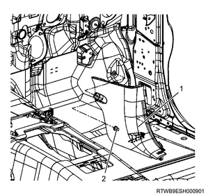
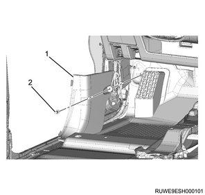
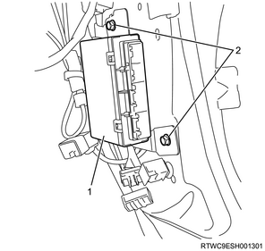
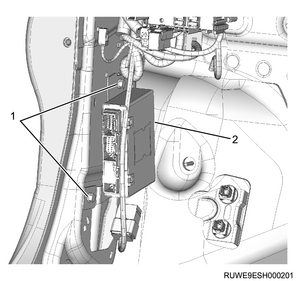

Caution
1. Check specification of vehicle.
Note
Note
1. Connect a scan tool to the DLC.
2. Turn ON the ignition switch.
3. Select the Diagnostics.
4. Select the body.
5. Select the BCM.
6. Select Programming & Resetting.
7. Select BCM Data Upload.
Note
1. Disconnect the battery ground cable from the battery.
Caution
1. Remove the dash side trim pad from the body.
Note

Note

1. Disconnect the harness connector from the BCM.
Note
2. Remove the BCM from the dash panel.
Note

Note
